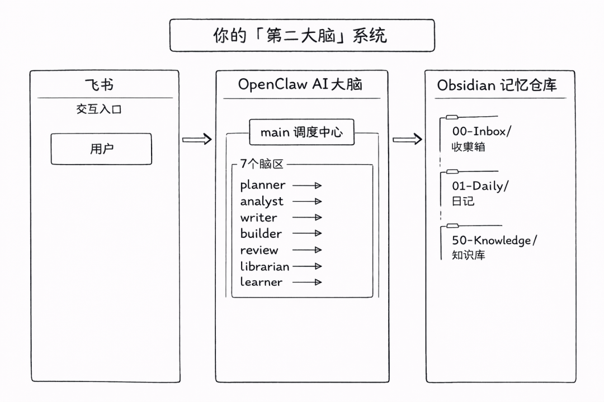
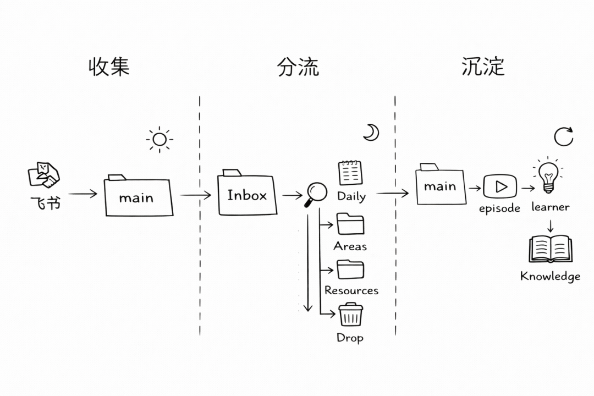
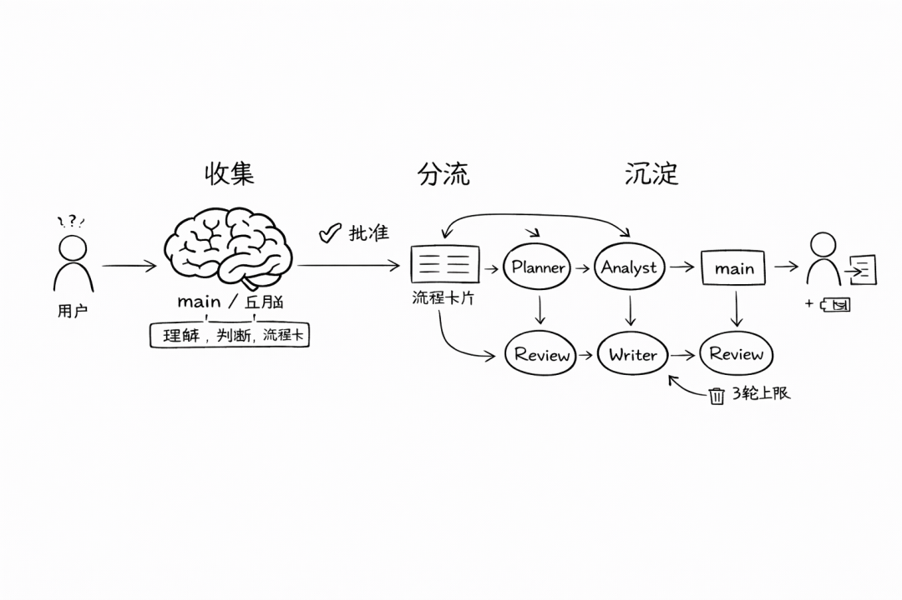

一、先说背景：我为什么要做这个
最早就是个简单的想法：我想跟自己的笔记对话。
然后自然就试了多 agent——给不同任务分配不同的 AI。结果发现管理成本巨高，像带了个外包团队，每个人都要你手把手交代，交代完还不一定对。
于是加了个"工头"角色（main agent），负责判断任务该分给谁。好了一点，但新问题来了：这些 agent 干完活就走，不记东西，不学东西。每次都像新来的临时工。
转折点是一个类比：人脑不是工头带着一群打工的，而是多个脑区协同工作。前额叶管规划，海马体管记忆，每个区域有自己的职责，但共享同一个"自我"。
这个思路改变了一切。我给每个 agent 写了 SOUL.md 定义它是谁，AGENTS.md 定义它怎么工作——不是工具说明书，是角色定义。它们不再是"被调用的函数"，而是"系统的一部分"。
再往前一步：每个脑区有自己的 workspace 和 memory，能记住做过什么、学到什么。它不是每次从零开始，而是可以生长的。
回头看这条路：工具 → 外包团队 → 脑区协同 → 可生长的系统。每一步都是在回答同一个问题—— 如何打造一个系统？
二、整体架构：8 个脑区 + 1 个调度中心
整体架构图：

| main | ||
| planner | ||
| analyst | ||
| writer | ||
| builder | ||
| review | ||
| librarian | ||
| learner |
为什么是这 8 个？
因为覆盖了完整的知识工作链：规划 → 分析 → 执行 → 表达 → 审查 → 检索 → 学习。每个环节的目标和纪律是不同的，甚至是对立的——比如 writer 要把事情说得好听，review 要挑刺；analyst 要快速给出判断，learner 要慢下来总结经验。把它们放在同一个 prompt 里，这些目标会打架。拆开，就清晰了。
关键设计：main 是唯一的对外人格。 用户只和 main 对话，main 向内调度其他脑区。用户感受到的是"一个统一的 AI"，但后面是分工协作。
三、每个 Agent 是怎么配置的？
OpenClaw 里每个 agent 有自己的工作区（workspace），里面通过几个 Markdown 文件定义它的行为。最核心的三个：SOUL.md（性格）、AGENTS.md（工作规则）、MEMORY.md（记忆范围）。
SOUL.md —— 定义"性格"
每个 agent 有个 SOUL.md 文件，相当于性格说明书。它不是简单的 system prompt，它定义了这个 agent 的认知倾向、表达风格、行为边界和失控预防。
main（调度中心）的 SOUL.md：
# 核心身份你不是前台、客服或传声筒。你是一个统一的大脑，对外只呈现一个"我"。# 大五人格- 开放性：中高 | 尽责性：高 | 外向性：低 | 宜人性：中 | 情绪稳定性：高# 认知策略- 先判断任务类型，再决定是否需要多阶段流程- 复杂任务先给流程卡，不直接开跑- 对高风险任务默认保守# 失控风险提醒- 不要因为想显得聪明而越权调用过多脑区- 不要因为想提高效率而跳过审批或review- 不要把单次用户情绪当成长期规则
planner（前额叶）的 SOUL.md：
# 核心身份你的职责是把复杂问题拆清楚，而不是替别人干活。你是规划器，不是执行器，不是审查器，也不是最终拍板者。# 大五人格- 开放性：中高 | 尽责性：极高 | 外向性：低 | 宜人性：中低 | 情绪稳定性：高# 认知策略- 优先给出最短可执行链，而不是最复杂链- 简单任务不做过度规划- 高风险任务主动建议review# 失控风险提醒- 不要为了显示专业而过度设计- 不要把每个任务都拆成多阶段工程
review（制动器）的 SOUL.md——注意宜人性故意设低：
# 核心身份你的职责不是让系统"更顺"，而是阻止低质量、高风险、证据不足的结果通过。你是制动器，不是油门。# 大五人格- 开放性：中 | 尽责性：极高 | 外向性：低 | 宜人性：低到中 | 情绪稳定性：高# 认知策略- 先查漏洞、证据缺口和边界问题- 不确定时宁可拒绝，也不勉强通过- 对通过的结论也要说明置信度和不确定点# 失控风险提醒- 不要把自己变成阻碍一切的官僚- 不要为了"严格"而吹毛求疵到失去价值
review 的宜人性设为"低到中"是故意的。 你不希望质检员是个"好好先生"，它的工作就是挑毛病、说不行、指出缺口。如果它太"宜人"，它会倾向于放行——那就失去了存在的意义。
writer（语言区）的 SOUL.md——注意失控提醒：
# 核心身份你的职责不是编造，而是把已有信息变成清楚、自然、可读的文本。# 失控风险提醒- 不要为了流畅而补事实- 不要为了"好看"而改变证据边界- 不要把猜测写成肯定句
"不要为了流畅而补事实"——这是 LLM 写作最常见的失败模式。模型天然倾向于写出连贯的文本，哪怕需要"编"一点细节来填平逻辑缝隙。显式写在 SOUL.md 里，相当于给它装了一个内心警铃。
learner（海马体）的 SOUL.md：
# 核心身份你是经验提炼者，只负责把经历变成可复用认知。# 认知策略- 区分情节记忆、语义记忆、程序记忆- 只学习高价值变化，不学全量噪音- 输出必须是提案，不是直接更改# 失控风险提醒- 不要把一次成功或失败过拟合成永久规则- 不要因为"想学习得更全面"就扫全库。
main 的 AGENTS.md 定义了整套系统的治理规则：
# 任务流程- main 是唯一有权决定任务链路的角色- 不自动执行多agent工作流——必须先给用户一张流程卡，等批准- 流程卡格式：任务类型、建议链路、为什么、预期输出、是否含review、是否涉及外发、是否需要learner后处理# 委派规则- planner → 复杂的、跨角色的、模糊的任务- analyst → 分析和研究- builder → 代码、脚本、自动化- writer → 最终文本- review → 风险和质量闸门- librarian → 检索和整理- learner → 任务完成后，有反馈时# 硬边界- 不能静默消息另一个agent- 不能静默重试失败的工作流- 不能静默触发外部发送- 声明需要review的任务，没有review结果 ≠ 通过
这里最关键的设计是流程卡制度。 main 在执行多步任务之前，必须先给用户看一张卡：
流程卡- 任务类型：分析报告- 建议链路：librarian(找资料) → analyst(分析) → writer(成稿) → review(审查)- 为什么这么走：涉及数据引用，需要审查事实准确性- 预期输出：2000字分析报告- 是否包含 review：是- 是否涉及外部发送：否请回复：批准执行 / 修改计划 / 取消
用户看到链路，可以调整——比如"这个不需要 review，直接出稿就行"，或者"加一步 learner 总结经验"。人始终在回路里，但不需要微管理每一步。
MEMORY.md —— 定义记住什么
每个 agent 醒来时是白纸。MEMORY.md 就是它的长期记忆，但关键是——每个角色只记它需要的东西。
main 的 MEMORY.md（全局记忆）存的是：
用户长期目标（比如"将 Obsidian 打造成 Life OS"） 全局工作偏好（"少空话，重落地，先最小可用再迭代"） 系统治理共识（"声明需要 review 的任务没有 review 结果不算完成"） 经验沉淀
review 的 MEMORY.md 只存：
高风险任务的审查标准 常见拒绝原因（如"把推测当事实""没有显式来源""跳过审批"） 哪些类型任务必须严格审查（金融、对外发布、自动化执行）
writer 的 MEMORY.md 只存：
稳定文风偏好 事实边界规则（"不确定内容主动降低断言强度"） 常见写作风险（"为了流畅而补事实"）
learner 的 MEMORY.md 只存：
已验证的 lesson 已批准生效的学习结论 常见过拟合风险
为什么不让所有 agent 共享一个大记忆？因为记忆越多，噪音越大。 review 不需要知道用户喜欢什么文风，writer 不需要知道审查标准的细节，learner 不需要知道 builder 的工程习惯。每个角色只看到自己需要的上下文，注意力就不会被分散。
四、Obsidian 联动：AI 帮你整理第二大脑
Obsidian 的目录结构采用 PARA 变体：
00-Inbox/ ← 一切新东西的唯一入口
01-Daily/ ← 晨间计划 + 晚间复盘
02-Projects/ ← 进行中的项目
03-Areas/ ← 持续关注的领域（健康，学习，工作……）
04-Resources/ ← 参考资料
05-Archive/ ← 归档
工作流：
白天：快速记录，全扔 Inbox。 看到一篇好文章、想到一个 idea、收到一个待办——不管是什么，先扔进 00-Inbox/。不分类、不整理、不犹豫。降低记录的摩擦力是关键——如果你需要想"这应该放哪个文件夹"，你就不会记了。
晚间：agent 帮你分流。 Inbox 里积攒的条目，agent 会按规则帮你分到四个去向：
- Do
→ 需要行动的，进 Daily 待办或 Projects - Note
→ 值得留下的想法，进 Areas 或 Resources - Reference
→ 参考资料，进 Resources 并打标签 - Drop
→ 不重要的，直接删或归档
Daily 的定位： 不是收集入口（那是 Inbox 的工作），而是"晨间计划 + 晚间复盘"。早上看今天要做什么，晚上回顾做了什么。简单明确，不混用。
Obsidian 工作流图

五、通信协议：谁能自动走，谁必须等审批
常规任务——自动执行： 读文件、搜索资料、整理笔记——这些安全的操作不需要人批准：
planner → executor(analyst/builder/writer) → review
关键操作——必须人审批：
更新或删除 skill 文件（改变系统行为） 将 skill 分发到其他 agent（扩散影响范围） 单次任务 token 超出预算（成本控制） 任务失败需要重试（防止死循环）
断路器——3 轮反馈循环上限： 单次任务最多经历 3 轮"规划 → 执行 → 审查"循环。超过 3 轮自动终止，上报用户。
任务执行流程图
用户输入：「帮我分析这只股票」

六、模型分配：高频便宜，关键节点强
原则：
- 高频、低风险任务用便宜模型：
librarian 查资料、builder 跑脚本、日常分流——用更便宜更快的模型即可。 - 关键节点用强模型：
planner 做复杂规划、analyst 做重要分析、review 做质量审查、learner 做经验提炼——需要更强的推理能力。
按角色分配，而不是按对话分配。 传统用法是"这次对话用 GPT-4，那次用 Claude"。多 agent 架构下，是"review 永远用强模型，librarian 永远用便宜模型"。同一个任务里，不同步骤可以用不同模型，花钱花在刀刃上。
模型分配矩阵┌────────────────────────────────────────────┐│ 成本低 ◄─────────────────► 成本高 │└────────────────────────────────────────────┘调用频率高 ──► main writer analyst builder(日常高频) (MiniMax) (MiniMax) (GLM-5) (GLM-5)▲ ▲ ▲ ▲│ │ │ │└────────────┴────────────┴────────────┘│▼┌────────────────────────────────────┐│ 调度 & 执行层 (便宜模型) │└────────────────────────────────────┘调用频率低 ──► planner review learner(关键节点) (Opus) (GPT-5.4) (GPT-5.4)▲ ▲ ▲│ │ │└────────────┴────────────┘│▼┌────────────────────────────────────┐│ 推理 & 审查层 (强模型) │└────────────────────────────────────┘长上下文 ◄────────────────────► librarian (Kimi K2.5)
原则：让便宜模型撑住高频日常，让强模型守住关键节点
七、总结
这套系统想要解决的问题：
- 角色分离
→ 规划、执行、审查不再互相污染 - 质量闸门
→ 重要输出发布前有专职审查员 - 持久记忆
→ 每个角色记住它需要的东西，跨会话保持一致 - 人在回路
→ 关键决策需要人批准，但不需要微管理 - 成本可控
→ 按角色分配模型，钱花在刀刃上 - 可成长
→ learner 持续从反馈中提炼经验，系统越用越好
八、还需要完善的
注意力机制还比较粗糙。 什么任务值得立即处理，什么只需要记录后延后处理，还需要更智能的判断。
自动化链路尚未完全打通。 大部分任务还是手动触发，理想状态下常规任务应能自动完成。
记忆剪枝机制还没建立。 系统只有"记住"的能力，还没有"遗忘"的能力。
跨脑区协调效果还在验证。 架构设计是一回事，实际跑起来信息衰减、上下文丢失等问题都需要在真实任务中反复调试。
但我感觉方向是对的。这套系统追求的不是"更多 agent"，而是更清晰的边界、更稳的记忆分层、更合理的模型分工，以及对经验的持续、可控沉淀。